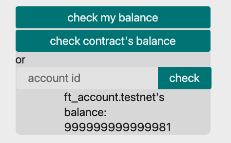
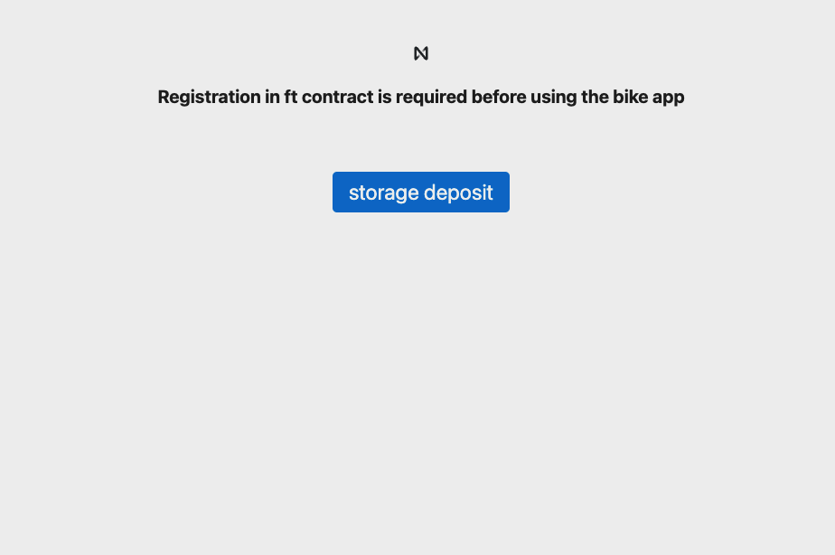
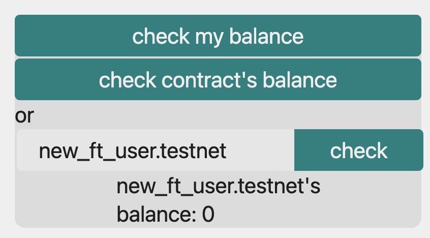
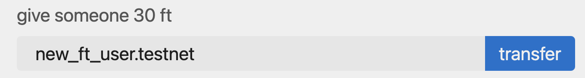
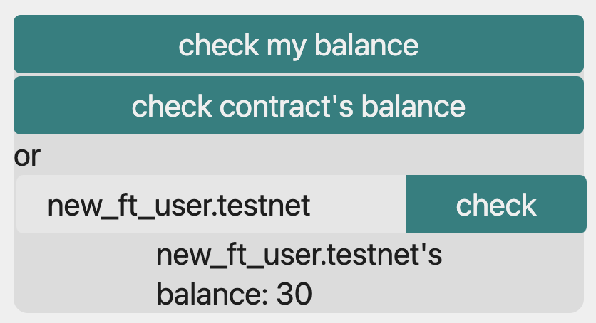

🚆 ftコントラクトをフロントに接続しよう
これまでにあなたは以下のことを達成しました ✨
ftコントラクトのデプロイ- バイクを管理するコントラクト(以降
bikeコントラクトと呼びます)のデプロイ bikeコントラクトとフロントエンドの接続
このセクションであなたは以下のことを行います 🛫
ftコントラクトをフロントエンドに接続してftコントラクトのメソッドも利用可能にする。ftコントラクトとbikeコントラクトを接続する。 これを行うことでバイクの使用や点検にトークンのやり取りを組み込むことができます。
それではftコントラクトを接続するために
再びnear_bike_share_dappの中にあるfrontendディレクトリの中身を変更していきます。
以降のセクションでは、今回作成したオリジナルftのことをftと便宜上呼ぶことにします。
初めにfrontend/assets/js/near/config.jsを次のように変更しましょう！
// config.js
const CONTRACT_NAME = process.env.CONTRACT_NAME || "new-awesome-project";
const FT_CONTRACT_NAME = "sub.ft_account.testnet";
function getConfig(env) {
switch (env) {
case "production":
case "mainnet":
return {
networkId: "mainnet",
nodeUrl: "https://rpc.mainnet.near.org",
contractName: CONTRACT_NAME,
ftContractName: FT_CONTRACT_NAME,
walletUrl: "https://wallet.near.org",
helperUrl: "https://helper.mainnet.near.org",
explorerUrl: "https://explorer.mainnet.near.org",
};
case "development":
case "testnet":
return {
networkId: "testnet",
nodeUrl: "https://rpc.testnet.near.org",
contractName: CONTRACT_NAME,
ftContractName: FT_CONTRACT_NAME,
walletUrl: "https://wallet.testnet.near.org",
helperUrl: "https://helper.testnet.near.org",
explorerUrl: "https://explorer.testnet.near.org",
};
case "betanet":
return {
networkId: "betanet",
nodeUrl: "https://rpc.betanet.near.org",
contractName: CONTRACT_NAME,
ftContractName: FT_CONTRACT_NAME,
walletUrl: "https://wallet.betanet.near.org",
helperUrl: "https://helper.betanet.near.org",
explorerUrl: "https://explorer.betanet.near.org",
};
case "local":
return {
networkId: "local",
nodeUrl: "http://localhost:3030",
keyPath: `${process.env.HOME}/.near/validator_key.json`,
walletUrl: "http://localhost:4000/wallet",
contractName: CONTRACT_NAME,
ftContractName: FT_CONTRACT_NAME,
};
case "test":
case "ci":
return {
networkId: "shared-test",
nodeUrl: "https://rpc.ci-testnet.near.org",
contractName: CONTRACT_NAME,
ftContractName: FT_CONTRACT_NAME,
masterAccount: "test.near",
};
case "ci-betanet":
return {
networkId: "shared-test-staging",
nodeUrl: "https://rpc.ci-betanet.near.org",
contractName: CONTRACT_NAME,
ftContractName: FT_CONTRACT_NAME,
masterAccount: "test.near",
};
default:
throw Error(
`Unconfigured environment '${env}'. Can be configured in src/config.js.`
);
}
}
module.exports = getConfig;
変更点は、FT_CONTRACT_NAMEを追加しています。
"sub.ft_account.testnet"の部分はあなたがftコントラクトをデプロイした先のアカウントIDを入力してください。
またgetConfigが返却するオブジェクトにftContractNameフィールドを追加しています。
次にfrontend/assets/js/near/utils.jsを次のように変更します。
// utils.js
import { connect, Contract, keyStores, WalletConnection } from "near-api-js";
import getConfig from "./config";
const nearConfig = getConfig(process.env.NODE_ENV || "development");
/** コントラクトを初期化し、グローバル変数(window)をセットします. */
export async function initContract() {
// ...
// ftコントラクトとの接続を追加
window.ftContract = await new Contract(
window.walletConnection.account(),
nearConfig.ftContractName,
{
viewMethods: ["ft_balance_of", "storage_balance_of"],
changeMethods: ["storage_deposit", "storage_unregister", "ft_transfer"],
}
);
}
// ...
export async function return_bike(index) {
// ...
}
// 以下ftのメソッド呼び出しを追加しています。
/**
* account_idのftの残高を取得します。
*/
export async function ft_balance_of(account_id) {
const balance = await window.ftContract.ft_balance_of({
account_id: account_id,
});
return balance;
}
/**
* account_idのストレージの使用状況を表すデータ構造を取得します。
* account_idが登録されていない場合はnullが返るので、登録されているかどうかの判断にこの関数を使用します。
*/
export async function storage_balance_of(account_id) {
const balance = await window.ftContract.storage_balance_of({
account_id: account_id,
});
return balance;
}
/** ストレージ使用量の支払い登録を行います。 */
export async function storage_deposit() {
const response = await window.ftContract.storage_deposit(
{}, // 引数の省略 = このメソッドを呼び出しているアカウントを登録
"300000000000000", // ガス量の制限(in gas units)
"1250000000000000000000" // デポジット (in yoctoNEAR, 1 yoctoNEAR = 10^-24 NEAR)
);
return response;
}
/** アカウントの登録を解除します。 */
// 今回は簡単のため強制的に解除する方法を引数指定でとっています。
export async function storage_unregister() {
const response = await window.ftContract.storage_unregister(
{ force: true }, // アカウントの情報に関わらず登録を解除する、所持しているftはバーンされる
"300000000000000",
"1"
);
return response;
}
/** ftをreceiver_idへ転送します。 */
export async function ft_transfer(receiver_id, amount) {
const response = await window.ftContract.ft_transfer(
{
receiver_id: receiver_id,
amount: amount,
},
"300000000000000",
"1" // セキュリティ上必要な 1 yoctoNEAR
);
return response;
}
//ファイル終端
window変数にftContractを追加し、ftコントラクト上のメソッドをいくつか呼び出すようにしています。
各メソッドの意味はコード内コメントにて記載しています。
詳しくはこちらとこちらを参照してください。
ここに注目しましょう。
export async function storage_deposit() {
const response = await window.ftContract.storage_deposit(
{}, // 引数の省略 = このメソッドを呼び出しているアカウントを登録
"300000000000000", // ガス量の制限(in gas units)
"1250000000000000000000" // デポジット (in yoctoNEAR, 1 yoctoNEAR = 10^-24 NEAR)
);
return response;
}
メソッド呼び出し後、ガス量の制限とデポジットの付与を上記のような形でつけることができます。
- ガス量の制限 メソッド呼び出しにガス量がデフォルト値を超えるような場合は明示的にガス量の制限を加えます。 ガス代はガス量とガス料金を掛け合わせたものです。詳しくはこちらをご覧ください。
- デポジット
コントラクトに支払う料金をここで指定します。
トークンの転送などのメソッド呼び出しに
"1"を指定する場合がありますが、これはセキュリティ上の理由です。 デポジットの支払いは最小単位の"1"であってもフルアクセスキーを持つアカウントによるサインを求めます。 資産価値のあるトークンの転送などの重要なメソッド呼び出しは、フルアクセスキーを持たないアカウントによる呼び出しを防ぐためにこのようなことをしています。 詳しくはこちらをご覧ください。
それではfrontend/App.jsで各メソッドを利用するコードを書きましょう！
importを追加しましょう。
import {
login,
logout,
num_of_bikes,
is_available,
who_is_using,
who_is_inspecting,
use_bike,
inspect_bike,
return_bike,
ft_balance_of,
storage_balance_of,
storage_deposit,
storage_unregister,
ft_transfer,
} from "./assets/js/near/utils";
initRenderingStateでアカウントが登録されているかも考慮するように変更します。
useEffect(() => {
/** バイクを使用するために必要なftの量を取得しセットします。 */
const initAmountToUseBike = async () => {
setAmountToUseBike(30); // 一時的に30と仮定します。
};
/** renderingStateを初期化します */
const initRenderingState = async () => {
if (!window.walletConnection.isSignedIn()) {
setRenderingState(RenderingStates.SIGN_IN);
} else {
const is_registered = await isRegistered(window.accountId);
if (!is_registered) {
setRenderingState(RenderingStates.REGISTRATION);
}
}
};
/** allBikeInfoを初期化します */
const InitAllBikeInfo = async () => {
const num = await num_of_bikes();
console.log("Num of bikes:", num);
const new_bikes = [];
for (let i = 0; i < num; i++) {
const bike = await createBikeInfo(i);
new_bikes.push(bike);
}
setAllBikeInfo(new_bikes);
console.log("Set bikes: ", new_bikes);
};
initAmountToUseBike();
initRenderingState();
InitAllBikeInfo();
}, []);
updateBikeInfoの下に新たな関数群を定義します。
const updateBikeInfo = async (index) => {
// ...
};
/** account_idがftコントラクトに登録しているかを判別します。 */
const isRegistered = async (account_id) => {
const balance = await storage_balance_of(account_id);
console.log("user's storage balance: ", balance);
// ストレージ残高にnullが返ってくる場合は未登録を意味します.
if (balance === null) {
console.log("account is not yet registered");
return false;
} else {
return true;
}
};
/** ftコントラクトに登録します。 */
const newUserRegister = async () => {
try {
await storage_deposit();
} catch (e) {
alert(e);
}
};
/** account_idのft残高を取得し、残高表示用オブジェクトbalanceInfoにセットします。 */
const prepareBalanceInfo = async (account_id) => {
const balance = await ft_balance_of(account_id);
const balance_info = await initialBalanceInfo();
balance_info.account_id = account_id;
balance_info.balance = balance;
setBalanceInfo(balance_info);
setShowBalance(true);
};
追加した関数群を使用するように各レンダリング用の関数を変更します。
基本的にはボタンと関数をonClickで連携させています。
/** 登録解除ボタンの表示に使用します。 */
const unregisterButton = () => {
return (
<button
className="link"
style={{ float: "right" }}
onClick={storage_unregister}
>
Unregister
</button>
);
};
/** 登録画面を表示します。 */
const requireRegistration = () => {
return (
<div>
{signOutButton()}
<div style={{ textAlign: "center" }}>
<h5>
Registration in ft contract is required before using the bike app
</h5>
</div>
<main>
<p style={{ textAlign: "center", marginTop: "2.5em" }}>
<button onClick={newUserRegister}>storage deposit</button>
</p>
</main>
</div>
);
};
/** 残高表示に使用します。 */
const checkBalance = () => {
return (
<div className="balance_content">
<button onClick={() => prepareBalanceInfo(window.accountId)}>
check my balance
</button>
<button
style={{ marginTop: "0.1em" }}
onClick={() => prepareBalanceInfo(window.contract.contractId)}
>
check contract's balance
</button>
<span>or</span>
<form
onSubmit={async (event) => {
event.preventDefault();
const { fieldset, account } = event.target.elements;
const account_to_check = account.value;
fieldset.disabled = true;
try {
await prepareBalanceInfo(account_to_check);
} catch (e) {
alert(e);
}
fieldset.disabled = false;
}}
>
<fieldset id="fieldset">
<div style={{ display: "flex" }}>
<input autoComplete="off" id="account" placeholder="account id" />
<button style={{ borderRadius: "0 5px 5px 0" }}>check</button>
</div>
</fieldset>
</form>
{showBalance && (
<div>
<p>{balanceInfo.account_id}'s</p>
<p>balance: {balanceInfo.balance}</p>
</div>
)}
</div>
);
};
/** ftの送信部分の表示に使用します。 */
const transferFt = () => {
return (
<div>
<form
onSubmit={async (event) => {
event.preventDefault();
const { fieldset, account } = event.target.elements;
const account_to_transfer = account.value;
fieldset.disabled = true;
try {
await ft_transfer(account_to_transfer, amountToUseBike.toString());
} catch (e) {
alert(e);
}
fieldset.disabled = false;
}}
>
<fieldset id="fieldset">
<label
htmlFor="account"
style={{
display: "block",
color: "var(--gray)",
marginBottom: "0.5em",
marginTop: "1em",
}}
>
give someone {amountToUseBike.toString()} ft
</label>
<div style={{ display: "flex" }}>
<input
autoComplete="off"
id="account"
style={{ flex: 1 }}
placeholder="account id"
/>
<button style={{ borderRadius: "0 5px 5px 0" }}>transfer</button>
</div>
</fieldset>
</form>
</div>
);
};
ftコントラクトの接続を完了したので,
near_bike_share_dapp直下で以下のコマンドを実行してみましょう！
$ yarn dev
ブラウザで立ち上がったら、check my balanceなどのボタンを押して挙動を確認してみてください。

また、一度サインアウト(※ftをたくさん持っているアカウントでUnregisterを押さないように気をつけてください。)し,
新たに作成したアカウントでサインインすると,
ftコントラクトに未登録なので登録画面が表示されます。
ここではtestnet walletを利用して、new_ft_user.testnetという新規アカウントを作成しました。
サインインを行います。

その後アカウント登録画面になります。 登録します。

再びサインアウトし、ft_account.testnet(ftのowner id、ftをたくさん持っていればどんなアカウントでも良いです)で入り直します。
ft_account.testnetからnew_ft_user.testnetへftの送信を行ってみます。
事前にnew_ft_user.testnetの残高を調べると0ftです。

new_ft_user.testnetへftを送信します。

new_ft_user.testnetの残高が増えています。

🙋♂️ 質問する
ここまでの作業で何かわからないことがある場合は、Discordの#nearで質問をしてください。
ヘルプをするときのフローが円滑になるので、エラーレポートには下記の3点を記載してください ✨
1. 質問が関連しているセクション番号とレッスン番号
2. 何をしようとしていたか
3. エラー文をコピー&ペースト
4. エラー画面のスクリーンショット
ftコントラクトの接続と実行ができました 🎉
次のレッスンではftコントラクトとbikeコントラクトを連携させます！